WELCOME TO MINNYMEDIA
Games to explore.
Tools to grow.
A moonlit garden. A better practice session. Your next move. A new chord.
Independent games and music apps, brought to life one idea at a time.
Explore the portfolio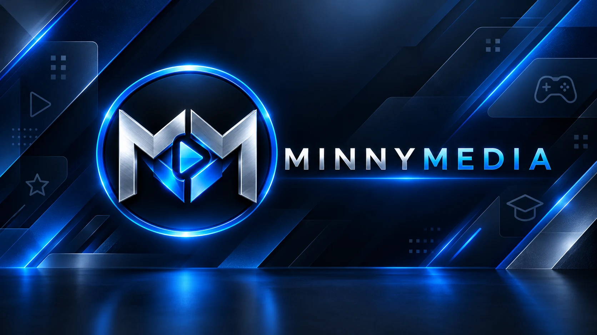
THE PORTFOLIO / 01—04
Different worlds.
The same imagination.
Explore what’s out now, what’s coming next, and what’s taking shape.
A SNAKE-INSPIRED ARCADE ADVENTURE
Spirit Dragon
Find your flow.
Face the challenge.
Guide your dragon through a moonlit garden. Gather fruit, harness elemental spirits, and keep growing—while leaving room for your next turn.
MinnyMedia’s first game brings a familiar arcade idea into a world of glowing ponds, drifting petals and six collectible dragon spirits.

6Dragon spirits
2Difficulty modes
38Achievements
4Leaderboards
Elemental power-ups · Score combos · Unlockable Ancient Rites
Explore Spirit DragonMETRONOME & PRACTICE
AUREUS
A better space
to practise.
For musicians who care about precise rhythm, focused sessions and steady progress. AUREUS brings a flexible metronome and pitch tools into a calm, black-and-gold practice space.
Set time signatures, subdivisions, tuplets, shuffle and beat accents. Choose classic clicks or sampled drums, save presets, use a session timer, and review your practice statistics.
Explore AUREUSYour practice toolkit, up close.
Six views inside AUREUS. Select any screenshot to enlarge.

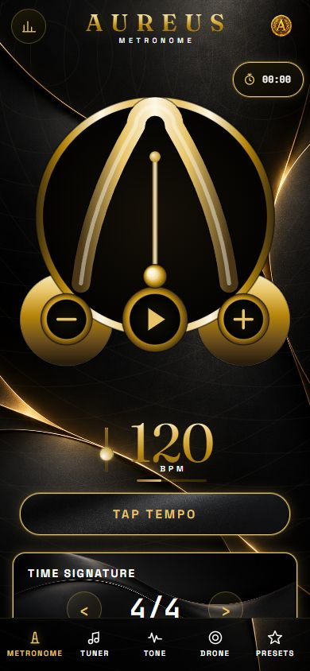
The metronome
A gold pendulum. A clear pulse. Your tempo.

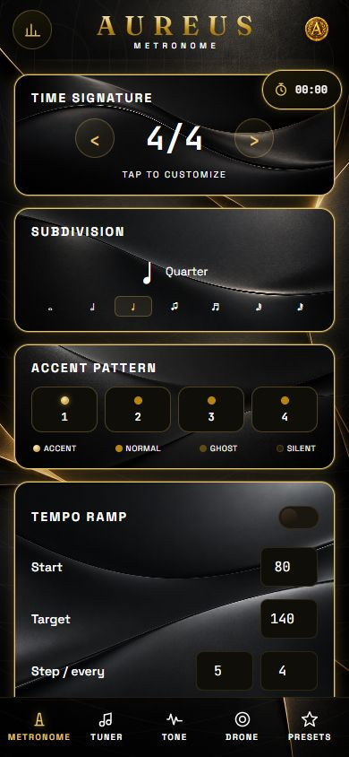
Shape the rhythm
Time signatures, subdivisions, accents and tempo ramps.

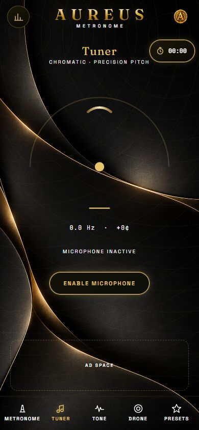
Chromatic tuner
Find your pitch with a clear tuning gauge.

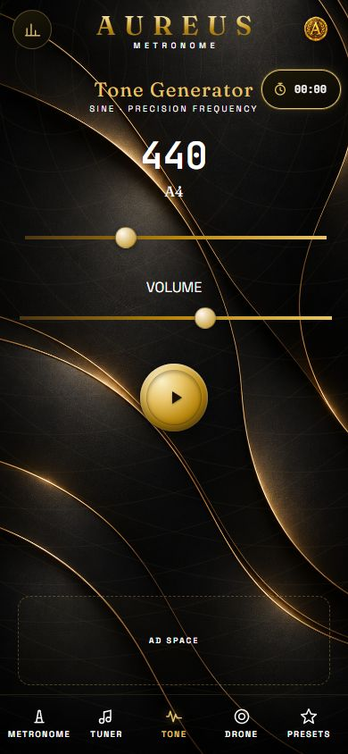
Reference tone
Dial in a frequency and listen closely.

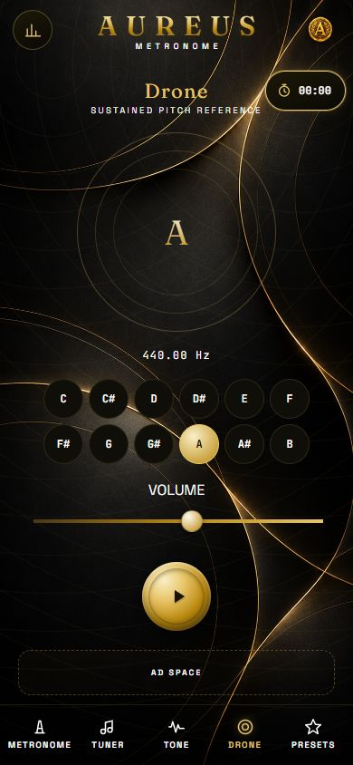
A steady drone
An anchor for intonation and focused listening.

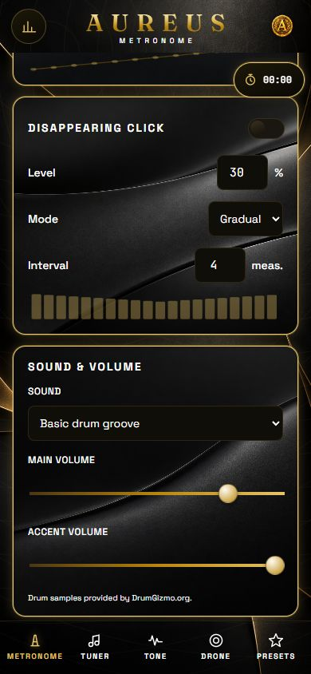
Make it sound right
Classic clicks, sampled drums and a basic groove.
Android release approaching · Currently in closed testing
Ask about AUREUSCONNECTION · CAPTURE · CONQUEST
Fanorona
Every move
has a consequence.
Capture by approaching an opponent—or by withdrawing. Link your captures into a chain, and turn one opening into a very different game.
Meet distinctive opponents, earn beautiful boards and piece sets, and bring your favourites into Custom Game. Begin with Finn’s guided match, then find your own way.
Discover Fanorona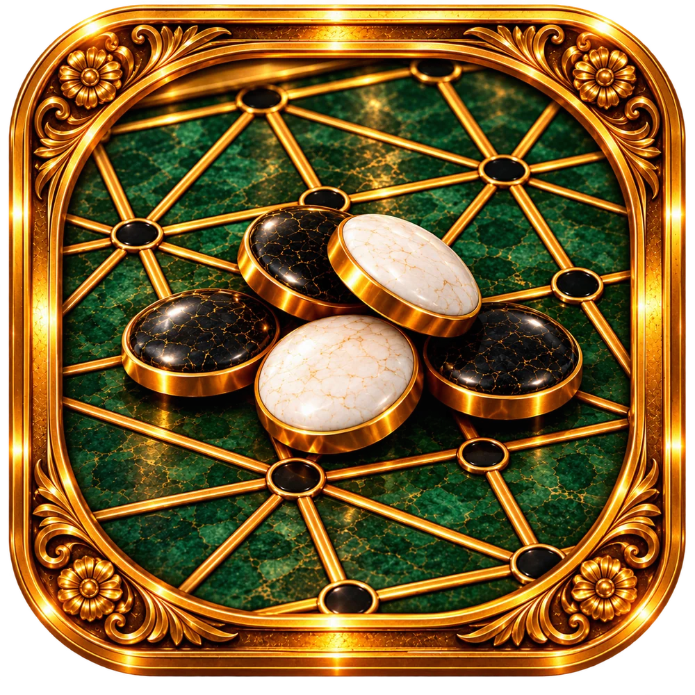
19Campaign opponents
26Boards to discover
26Piece sets
5Difficulty levels
THE PEOPLE ACROSS THE TABLE
From the tavern to the throne.
Meet three of the characters waiting along your campaign.

Finn Oakley
Tavern Regular · Your first opponent and guide.

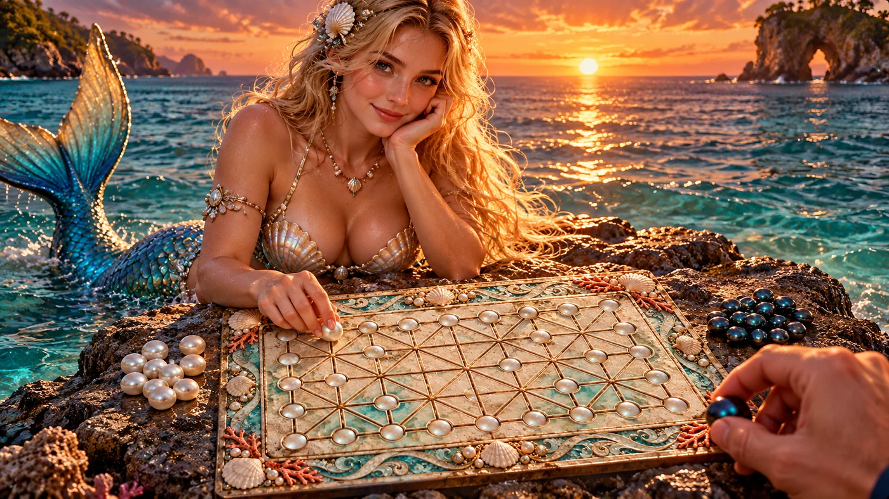
Nerissa Pearlwave
Keeper of the Reef · A world of pearl and coral.

King Alaric Auremont
The Diamond King · A challenge fit for the throne.
PLAY YOUR WAY FORWARD
A campaign worth exploring.
Win matches, build your collection and take on the next challenge.

The campaign
Meet your next challenger and see what you can earn.

At the table
Approach. Withdraw. Chain your captures.
A COLLECTION EARNED AT THE TABLE
Set your own table.
A glimpse of the boards you can discover and earn.

Pine
Your first table. Warm wood and a new beginning.

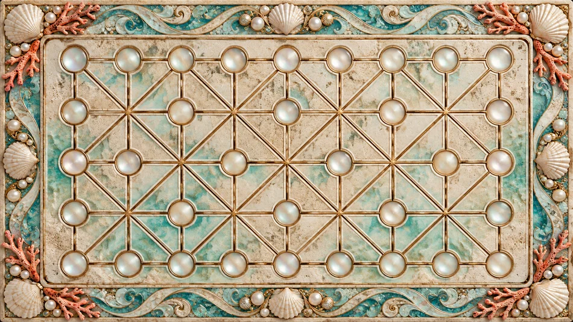
Beach Pearl
Turquoise, shells and treasures from the reef.

Diamond
An ornate crystalline setting for your next move.
Development complete · Preparing for Android closed testing
Explore the collectionYOUR GUITAR LEARNING COMPANION
FretForge
Your guitar journey.
One practice space.
Bring structure to your playing with guided campaigns, chord and scale libraries, ear training, the Circle of Fifths, and rhythm tools. Follow a learning path or spend a few minutes sharpening one skill.
Explore FretForgeSee it. Hear it. Play it.
Real previews from the working app. Select any image to look closer.

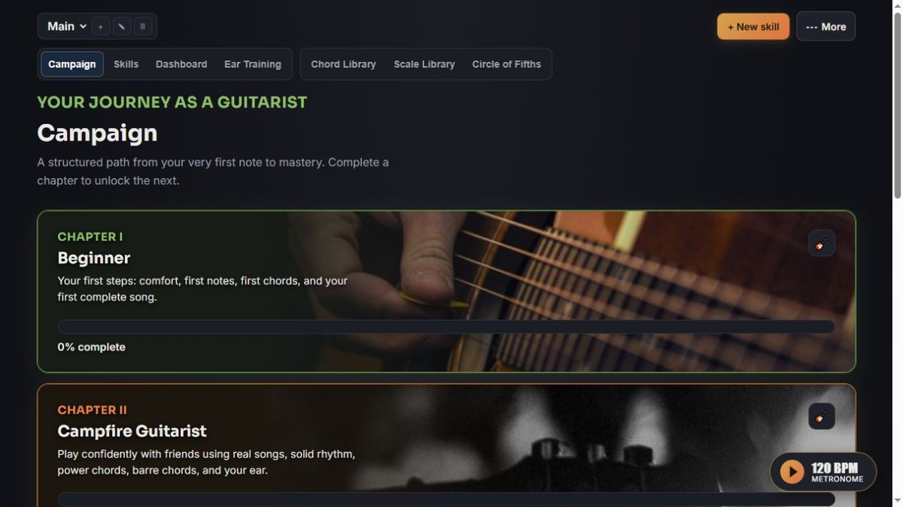
Your learning path
Six guitar campaigns, from Beginner to Master Guitarist, with chapters and progress tracking.

Chord Library & Finder
See diagrams and tablature, hear notes and strums, and explore fingerings.

Scale Library
Explore pentatonic, blues, CAGED and three-notes-per-string positions, with audio previews.

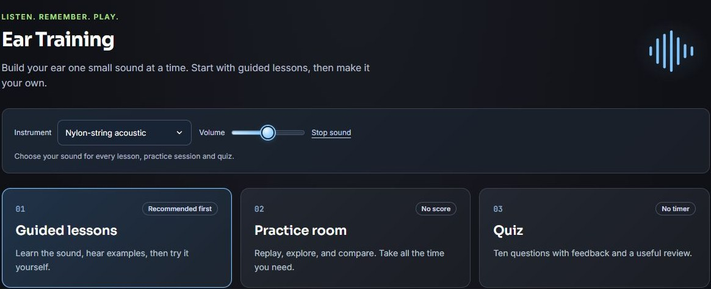
Ear Training
Work on pitch, intervals, melodies and chords through lessons, practice and quizzes.

Circle of Fifths
See how keys and chords connect, then explore progression examples.

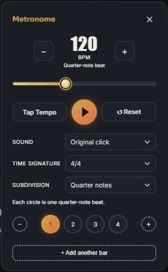
Keep your rhythm
Practise with tempo, subdivisions, accents, clicks and sampled drums.
Current development previews · Features and appearance may evolve
Ask about FretForgeBEHIND THE PROJECTS
One creator.
More ideas to come.
MinnyMedia is the home of independent games and music apps created by one independent developer.
From the first release of Spirit Dragon to the projects taking shape today, this is a growing collection of things to play, practise and explore.
New projects will join the portfolio as they’re ready. For now, take a look around—and find something that speaks to you.
LET’S TALK
A question?
An idea? Say hello.
For support, feedback or a conversation about the projects, get in touch directly.
Email MinnyMedia ruanminny88@gmail.com